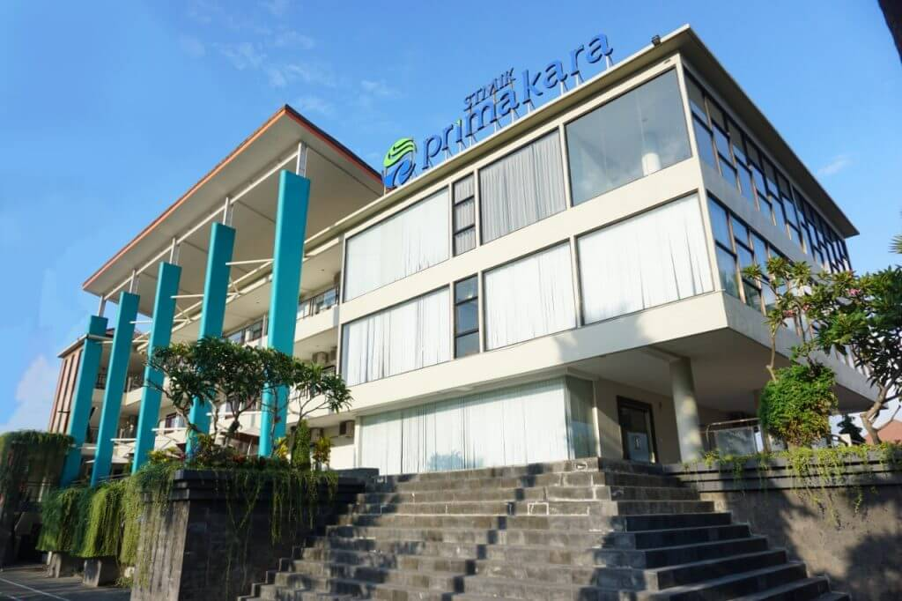

Berada di bawah naungan Yayasan Primakara, Sekolah Tinggi Informatika dan Komputer (STMIK) Primakara berdiri tahun 2012. Bertempat di Denpasar, STMIK Primakara menjadi yang pertama dan satu-satunya kampus IT yang fokus memberikan tidak hanya pengetahuan IT, namun juga pengetahuan bisnis bagi mahasiswanya.
Jln. Tukad Badung No. 135
Renon, Denpasar
0361 – 8956085
Siap sedia setiap saat
Tanya Primers
Official Account WA